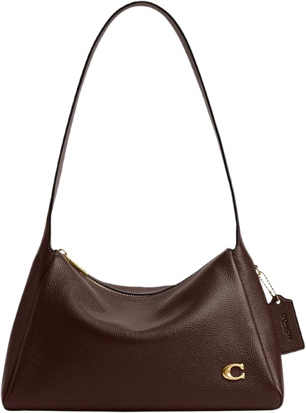

PM Lead & AI/ML Software Engineer
Google Developers Group
Sep 2025 — Present
wrangling a team of 5 to ship healthxr.ai — HIPAA compliance, privacy pipelines, and all
scroll ↓

[ ABOUT ME ]
I build where it matters most.
It started with Minecraft. Not just playing — but noticing that every problem had a logical solution. That instinct stuck. Somewhere between the redstone circuits and the React components, it became something real.
 where it all started
where it all started
Now I build ML pipelines for Child Protective Services, apps for real communities, and tools that make people's lives easier.
Built with heart.
[ EXPERIENCE ]
a story told in bloom
Google Developers Group
Sep 2025 — Present
wrangling a team of 5 to ship healthxr.ai — HIPAA compliance, privacy pipelines, and all
WashU CSE 2407
Jan 2026 — Present
the person 200+ students email at 11pm before the exam. worth it.
WashU McKelvey School of Engineering
May 2025 — Present
training models to help protect kids. the most meaningful thing I've built.
AmeriBakes
Feb 2024 — May 2025
turned a baking obsession into $3,500 in revenue and 150+ happy customers
Saint Louis University
Dec 2022 — May 2025
81% accuracy on warfarin dosing. co-authored a paper. still can't believe it.
United Way of Greater St. Louis
May 2024 — Apr 2025
one of 300 chosen from 7,000+ applicants. flew to D.C. learned a lot.
[ PROJECTS ]
Dear Recruiter,
Marketplace for WashU students to buy and sell MarketPoints (campus dining currency). Features Google OAuth restricted to @wustl.edu, JWT-authenticated API, and real-time marketplace feed.
Dear Recruiter,
Native iOS baking assistant with hands-free Kitchen Mode using Speech Framework and AVKit. Smart pantry algorithm powered by Spoonacular API.
Dear Recruiter,
App empowering users to build eco-friendly habits. Won 1st Place at the 2024 Congressional App Challenge; presented at House of Code in Washington D.C.
Dear Recruiter,
Startup concept addressing college class registration chaos. Won 2nd Place and $1,250 at WashU Olin Elevator Pitch Contest.
Dear Recruiter,
Recipe translation and instant search app covering 100+ drinks for a multilingual team; reduced recipe lookup time by 90%.
Dear Recruiter,
Recipe tutorial channel with 1,030+ subscribers. Handles all filming, editing, and graphic design independently.
[ MY GITHUB ACTIVITY ]
Loading activity…
[ ALSO ON GITHUB ]
scribbles & side projects
What's in
My Bag?
CS SKILLS

tap to open
Congressional Gold Medal
U.S. Congress
Awarded 2024
Full-Tuition Danforth Scholar
Washington University in St. Louis
Class of 2028
Congressional App Challenge · 1st
U.S. House of Representatives
2024
Distinguished Young Woman of MO
Distinguished Young Women
2025
MIT Women's Technology Program
Massachusetts Institute of Technology
Summer 2024
Bank of America Student Leaders
Bank of America
2024
Missouri Scholars 100
MO Dept. of Higher Education
2025
Scholar Athlete
St. Louis Post-Dispatch · 2025
2025
NCL · Top 13% Nationally
National Cyber League
2024
WashU Olin Pitch · 2nd Place
WashU Olin Business School
2024

and that's
a wrap.